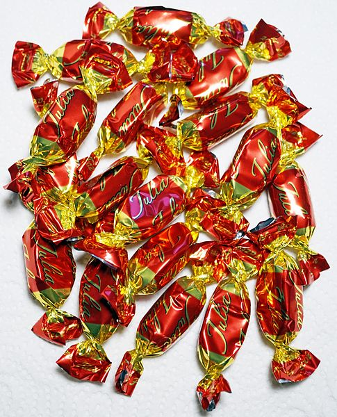
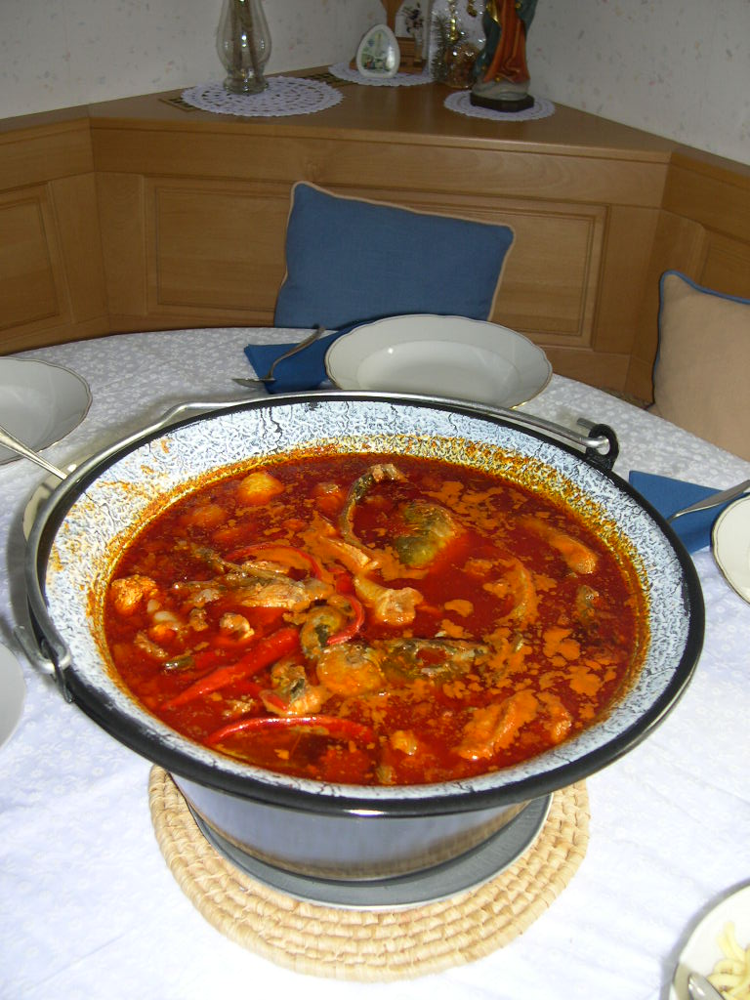
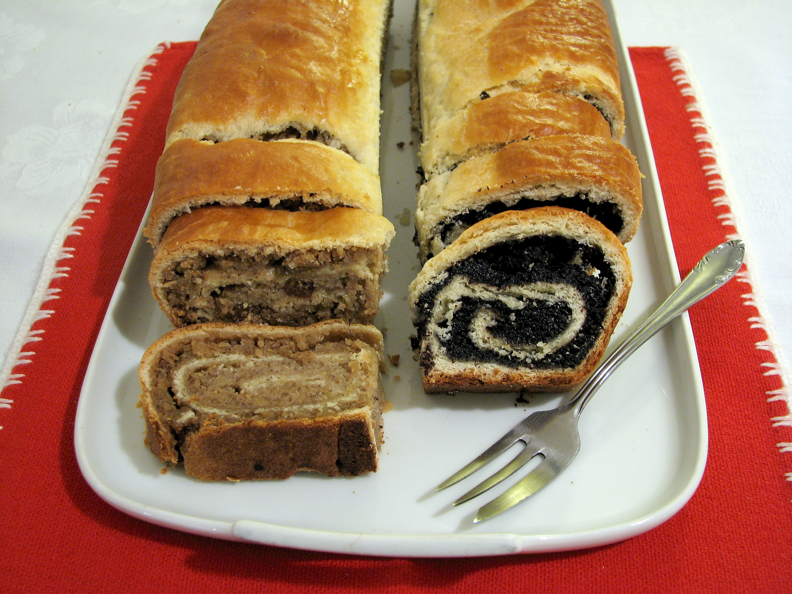
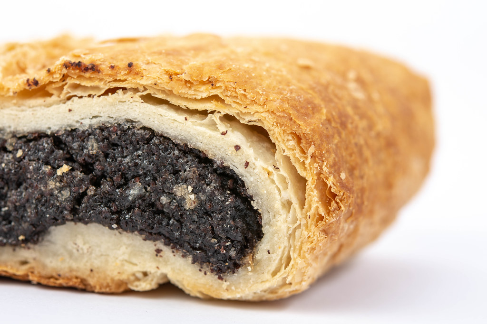
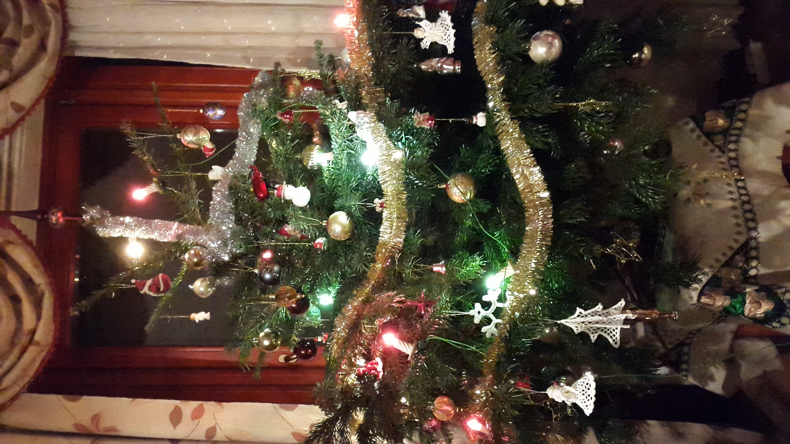

Christmas In Hungary
Christmas is an annual festival commemorating the birth of Jesus Christ, observed primarily on December 25. as a religious and cultural celebration among billions of people around the world.
In Hungary, the countdown to Christmas is marked by the traditional advent wreath. It consists of four white candles, representing faith, hope, joy and love. The candle is lit each Sunday leading up to Christmas, with the last candle lit on December 24th, Christmas Eve.
By the tradition, the Christmas tree is brought to every house by angels on December 24th. It is a Hungarian custom to decorate the tree with a special candy called szaloncukor, a sweet fondant covered in chocolate and wrapped in shiny foil. Several kilos of these sweets are used to decorate the tree. Usually, all the foil wrappers are empty by January 6th when the Christmas tree’s been taken off.
Eating habits

The big family dinner contains a spicy fish soup called Fishermen’s soup, made with carp and hot paprika.
Other typical Christmas meals are stuffed cabbage, cabbage leaves filled with rice, pork and more hot paprika for the flavour.

Poppy seeds are supposed to bring good luck, and there are several different kinds of desserts with poppy seeds for.

The most popular ones are the poppy seed roll and poppy seed strudel.
If you're not hungry after this...
Saint Nicholas
Besides the Christmas day, in Hungary, Saint Nicholas or Mikulás is celebrated on December 6th. All the children polish their shoes the night before and place them on their windowsills.
If you’ve been good, your shoes will be filled with sweets. If you have been naughty, Mikulás’ helper, Krampusz, a mischievous devil, will leave a bundle of sticks wrapped in foil instead.
Me and my family
At Christmas I usually play board games, chess, card games with my family. I visit my relatives in Szigetcsép during the winter break. We often bake gingerbread and poppy seed roll. I rarely hang out with my friends. We decorate the Christmas tree with lights and ornaments.
We usually watch a DVD together or chat. I often read a lot of books during the Christmas break. We usually listen to Christmas music.
Weather
Unfortunately, we have fewer and fewer white Christmases so we only have the snowman build and snow battles in our memories.
A popular presents
Hungarian children usually receive gifts twice during the season. Small toys, candy and sweets appear in their shoes put on the windowsill on December 6. As a reminder to be good, some children will receive branches from trees alongside other small gifts. Other traditions include the Baby Jesus bringing presents or even the Christmas tree at Christmas time.